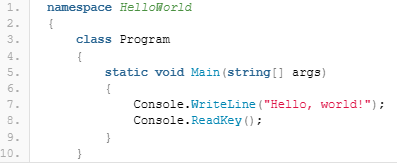
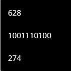
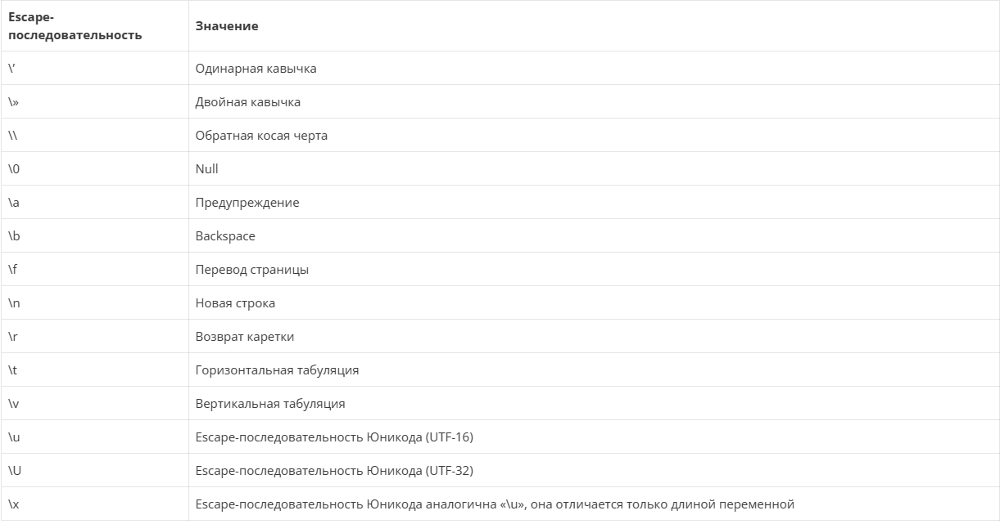
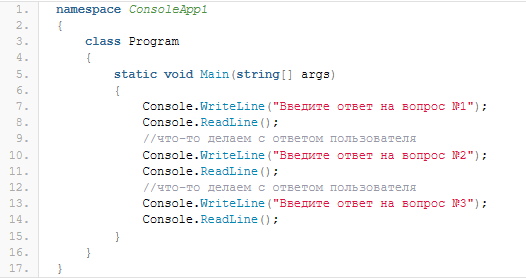

Содержание
Литерал — это какая-либо запись (значение) в исходном коде, представляющая собой фиксированное значение. Литералы в C# мы уже использовали, когда писали свое первое приложение в C# хоть и не знали того, что используем литералы. Однако, как и константы, литералы довольно часто могут использоваться при написании программ и умение ими пользоваться, думаю, будет достаточно полезным навыком при изучении языка C#.
Как было сказано выше, литералы C# мы использовали в своей работе. Вот пример:

Строка «Hello, world» ни что иное как строковый литерал. Язык C# позволяет использовать литералы различных типов.
Существует всего два логических литерала — это true (истина) и false (ложь).
Console.WriteLine(true);
Console.WriteLine(false);
Целочисленные литералы — это числа: 1, 2, 3, 4, -100, -1999 и так далее. В языке C# целочисленные литералы могут быть представлены в двоичной, десятеричной и шестнадцатеричной формах. Десятеричная форма записи известна нам всем ещё с первого класса, например:
Console.WriteLine(1999);
Console.WriteLine(-10);
Чтобы записать целочисленный литерал в двоичной форме необходимо предварять число в двоичной системе символами 0b (ноль и b), например,
Console.WriteLine(0b100000000);//256
Console.WriteLine(0b1000); //8
Для записи литерала в шестнадцатеричной форме используются символы 0x (ноль и x), числа от 0 до 9 и латинские буквы от A до F. Например, те же самые числа 256 и 8 в шестнадцатеричной форме в C# будут записаны вот так:
Console.WriteLine(0x100);//256
Console.WriteLine(0x8); //8
а, например, число 116622- вот так:
Console.WriteLine(0x1C78E);
В контексте рассмотрения целочисленных литералов, забегая немного вперед, стоит также упомянуть следующий момент: чтобы вывести в консоль целочисленный литерал в необходимой системе (двоичной, десятичной или шестнадцатеричной) можно воспользоваться методом ToString(value, toBase) класса Convert. Например, выведем число 628 в различных формах в консоль:
Console.WriteLine(Convert.ToString(628, 10));
Console.WriteLine(Convert.ToString(628, 2));
Console.WriteLine(Convert.ToString(628, 16));
В результате, в консоли мы увидим следующие записи:

Вещественные литералы в C# могут быть представлены в двух формах — в виде числа с фиксированной запятой и в экспоненциальной форме. Например,
Console.WriteLine(12.4);
Console.WriteLine(1.3E3);
В C# отдельный символ заключается в одинарные кавычки, например
Console.WriteLine('a');
Console.WriteLine('b');
onsole.WriteLine('w');
В отличие от Delphi, в C# строковые литералы заключаются в двойные кавычки, например:
Console.WriteLine("Это строка");
При этом в строковых литералах могут использоваться специальные последовательности символов, которые называют управляющими или escape-последовательностями. Каждая escape-последовательность начинается с символа «\». Некоторые escape-последовательности,допустимые для использования в строковых литералах C# представлены в таблице ниже.

Ключевое слово nullявляется литералом, представляющим пустую ссылку, которая не ссылается на объект.
Вообще, несмотря на то,что C#, как и другие языки программирования, допускает использовать литералы при написании приложения, частое их использование не рекомендуется. Частое использование литералов вместо констант (о константах мы ещё поговорим) может сделать ваш код трудно поддерживаемым в дальнейшем, а, возможно, что придётся всю работу начинать с начала. Поясню, что я имею в виду. Например, вы пишете большое приложение, которое последовательно, решает какую-то задачу и пользователь должен также последовательно передавать в программу какие-либо данные. При работе над консольным приложением такое поведение может выглядеть примерно так:

При этом, вместо комментариев можете представить какие-либо действия, например, вызов методов других классов, которые находятся в других местах программы, дополнительные запросы данных и так далее. Что произойдет, например, если вашу программу попробовать перевести на другой язык? Или изменить строки с вопросами? На больших проектах это может вызвать массу проблем.
Отвечая на вопрос «Когда использовать литералы?» я бы сказала так: когда используете константы. Такой код и поддерживать легче и выглядит приятнее.
Сегодня мы изучили, что представляют из себя литералы, как их можно использовать в своих приложениях, а также затронули немного тему констант, управляющих и специальных символов C#.